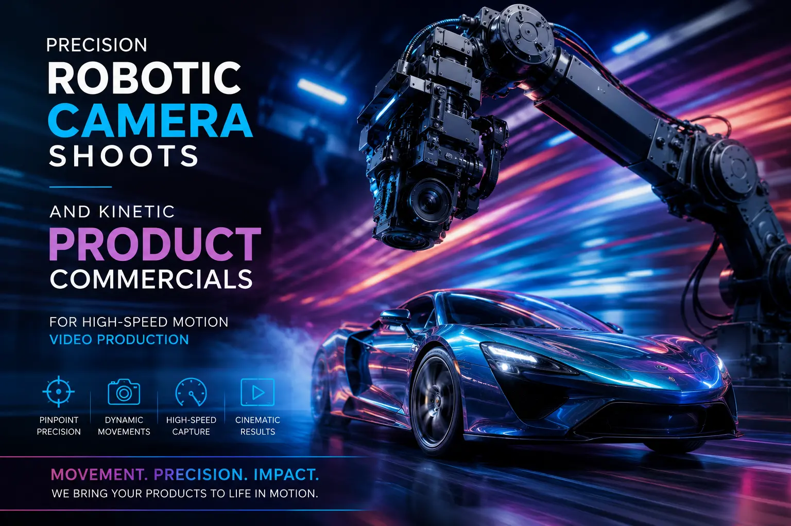
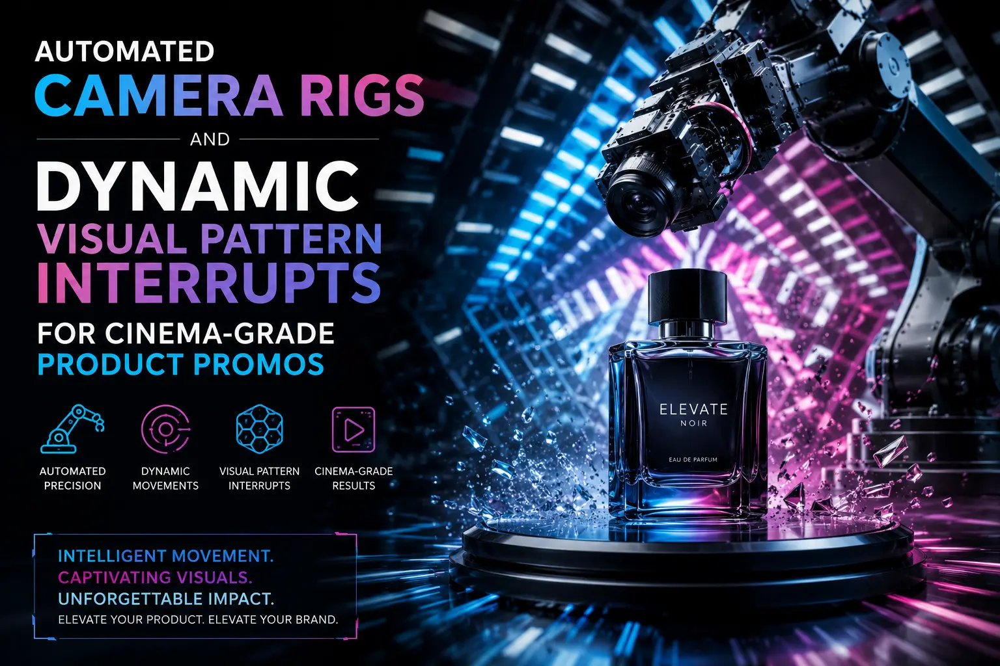

Using High-Speed Robot Arm Camera Movements to Shoot Hypnotic Product Promos
Why the Human Hand Cannot Produce What the Algorithm-Controlled Arm Can
The most skilled human camera operator in the world is limited by the physics of the human body — the inertia of bone and muscle, the reaction time of the nervous system, the micro-tremors of biological motion that no amount of training can entirely eliminate. A human operator can produce beautiful, fluid camera movement. They cannot produce movement that accelerates from stillness to three metres per second in 200 milliseconds, executes a perfect 270-degree orbital arc while maintaining sub-millimetre focus accuracy, and decelerates to a precise stop at a predetermined position — identically, take after take, frame after frame.
A robotic camera arm can. And the visual result — the impossibly smooth, impossibly precise, impossibly fast movement that the viewer's brain cannot categorise as any familiar camera technique — is the dynamic visual pattern interrupt that stops the scroll, holds the gaze, and brands the product with a visual signature of technological excellence that no conventional shoot can replicate.
High-speed motion video production using robotic camera arms is not a replacement for skilled cinematography — it is an additional production capability that opens creative possibilities that do not exist within the constraints of human-operated camera systems. The precision, the speed, the repeatability, and the mechanical perfection of robotic movement create a category of visual content that audiences instinctively recognise as premium, because the production values required to create it are visible in every frame.
The Technology: How Robotic Camera Arms Work in Commercial Production
Precision robotic camera shoots use adapted industrial robot arms — typically 6-axis articulated arms manufactured by companies like KUKA, Stäubli, and Fanuc, integrated with cinema-specific control systems by companies like Bolt, Mark Roberts Motion Control (MRMC), and edelkrone — to execute pre-programmed camera movements with mechanical precision.
The technical architecture of a robotic camera production:
- The robot arm: 6-axis articulated precision. The robot arm provides six independent axes of rotation — base rotation, shoulder, elbow, and three wrist axes — giving the camera mounting point full freedom of movement in three-dimensional space. Professional cinema robot arms such as the Bolt High-Speed Cinebot can move payloads of 15–30kg (a fully rigged cinema camera with lens and accessories) at speeds up to 4 metres per second with positional repeatability of ±0.02mm. This combination of payload capacity, speed, and precision allows the arm to execute camera movements that are simultaneously fast enough to create kinetic visual energy and precise enough to maintain perfect focus, framing, and spatial coordination with the product.
- Motion control software: programming the impossible move. The camera movement is programmed using dedicated motion control software that allows the operator to define the camera's path through three-dimensional space, its speed at every point along that path, its acceleration and deceleration profiles, and its orientation (where the camera is pointing) at every frame. The software provides real-time 3D visualisation of the programmed move, allowing the director and cinematographer to preview the camera path before the arm executes it — iterating on the movement design until it produces the exact visual result the creative brief requires. For kinetic product commercials, the motion design process is a creative discipline in itself — the character of the camera movement (smooth or aggressive, sweeping or precise, accelerating or constant-speed) is as important to the final visual impact as the lighting and composition.
- High-speed camera integration: capturing beyond human perception. Robotic arms are frequently paired with high-speed cameras (Phantom Flex4K, Phantom VEO 4K, or similar) that capture at 1,000+ frames per second — allowing the extreme speed of the robotic movement to be played back in slow motion, revealing the fluid dynamics, material interactions, and product details that occur too fast for the human eye to perceive. The combination of robotic speed and high-speed capture is the production technique behind the liquid splash slow-motion filming that defines premium food and beverage advertising: the robot arm sweeps through a liquid splash at high speed while the camera captures the event at 2,000+ fps, producing footage where the camera moves through the splash in real time but the liquid dynamics unfold in exquisite slow-motion detail.
- Synchronised product rigging: timing the physical event. Many robotic product shots involve precisely timed physical events — a liquid pour, a product drop, a packaging reveal, a mechanism activation — that must be synchronised with the camera movement to millisecond precision. Professional robotic production systems include triggering capabilities that coordinate the camera movement, the product event, and any lighting changes into a single synchronised sequence — ensuring that the camera is at the exact right position, at the exact right moment, when the product event occurs.
Scroll-Stopping Visual Impact
Robotic camera movements produce motion characteristics that the viewer's visual system cannot categorise as familiar — triggering the orienting response that overrides the scroll impulse. The first two seconds of a robotically shot product video achieve stop-scroll rates measurably higher than conventional camera techniques.
Perfect Repeatability
The same camera move executed identically across unlimited takes enables precise compositing, product swaps, colour variations, and multi-pass techniques that require frame-accurate registration between passes — production capabilities that are impossible with human-operated camera systems.
Premium Brand Signal
The production values visible in robotically shot content — the mechanical perfection, the impossible smoothness, the precision timing — function as an immediate premium brand signal. The viewer instinctively recognises that this content required investment, technology, and expertise that distinguish it from standard production.
Sensory Intensity
The combination of robotic speed, high-speed capture, and precision synchronisation with product events creates sensory intensity that standard production cannot approach — the visceral impact of liquid dynamics, material interactions, and product reveals captured and presented at a level of visual detail that creates genuine physical desire.

High-End Food and Beverage Videography: The Primary Application
High-end food and beverage videography is the product category where robotic camera production has had the most transformative commercial impact — because food and beverage advertising depends on creating visceral sensory desire, and robotic high-speed production creates sensory intensity that no other technique can match.
The specific robotic techniques for food and beverage production:
The Liquid Hero Shot
- Robotic arm sweeps through a precisely triggered liquid pour or splash at high speed
- High-speed camera (2,000–4,000 fps) captures the liquid dynamics in extreme slow motion
- The result: the camera moves fluidly through the liquid event while droplets hang suspended in air
- Applications: beverage pours, cocktail splashes, sauce drizzles, coffee cascades, juice bursts
The Orbital Product Reveal
- Robotic arm executes a 180° or 360° orbital sweep around a food or beverage product composition
- Speed-ramped movement: slow approach building to fast sweep, decelerating to final hero position
- Synchronised lighting changes track the camera position, maintaining optimal product illumination
- Applications: bottle reveals, plated dish presentations, ingredient compositions, packaging showcases
The Ingredient Drop Sequence
- Precisely timed ingredient drops (herbs, spices, fruits, ice) triggered in synchronisation with camera movement
- Robotic arm tracks the falling ingredients, maintaining focus and framing through the drop trajectory
- High-speed capture reveals the aerodynamic behaviour, tumbling patterns, and impact dynamics of each ingredient
- Applications: pizza topping cascades, salad ingredient assemblies, cocktail garnish drops, spice sprinkles
Kinetic Product Commercials: Beyond Food and Beverage
Kinetic product commercials using robotic camera systems extend beyond food and beverage into every product category where dynamic visual energy, precision engineering communication, and visual spectacle serve the brand's commercial objectives.
- Consumer electronics: the precision reveal. Robotic orbital movements around devices — smartphones, laptops, wearables, audio equipment — at precisely controlled speeds and distances reveal design details, material finishes, and form factors with a mechanical smoothness that communicates the engineering precision of the products themselves. The camera's movement becomes a metaphor for the product's own engineering: precise, controlled, and flawless.
- Beauty and cosmetics: the texture spectacle. Robotic high-speed capture of cosmetics textures — powder bursts, cream applications, lipstick swatches, liquid foundation flows — creates visual spectacle from material interactions that occur too fast for the human eye. A robotic sweep through a powder cloud at high speed, captured at 4,000 fps, produces footage of extraordinary visual richness that communicates product quality through the sheer beauty of its material behaviour.
- Automotive: the kinetic tracking shot. Robotic camera arms mounted on tracking vehicles or studio turntables execute precision tracking shots of vehicles and automotive components — maintaining exact distances, angles, and focus throughout complex compound movements that reveal the vehicle's design, surface quality, and engineering detail with a mechanical precision that matches the precision of the vehicle itself.
- Fashion and accessories: the dynamic styling shot. Robotic sweeps through styled fashion compositions — accessories, shoes, bags, watches arranged in editorial compositions — create dynamic energy from static objects, transforming product flat-lays and still-life compositions into kinetic visual experiences that command attention in video-dominated social feeds.
Dynamic Visual Pattern Interrupts: The Social Media Strategy
Dynamic visual pattern interrupts — the use of visually unexpected, mechanically impossible, or perceptually unfamiliar camera movements to break the viewer's scrolling pattern and force attentional engagement — are the primary social media application of robotic camera production.
- The opening impact frame. The first frame of a robotically shot video should communicate its visual distinction immediately — a frame that is already in motion, already dynamic, already visually distinct from the static thumbnails and standard-motion videos surrounding it in the feed. The robotic arm's ability to begin recording mid-movement allows the video to open at peak kinetic energy rather than building to it.
- Speed ramping as emotional modulation. Robotic systems allow precise speed ramping — smooth transitions between slow-motion and real-time playback speeds within a single continuous shot — that creates emotional modulation the viewer experiences as a visceral shift in energy. A slow, elegant approach that accelerates into a fast sweep and decelerates to a precise final position creates a micro-narrative of anticipation, energy, and resolution that holds attention through its emotional shape rather than just its visual content.
- Multi-pass compositing for visual complexity. The perfect repeatability of robotic movement allows multiple passes of the same camera move to be composited together — building visually complex sequences where multiple product states, colour variations, or environmental elements coexist within a single shot. This technique creates visual density and spectacle that single-pass filming cannot achieve, producing content that rewards repeat viewing and earns higher save and share rates.
- Format-specific movement design. Robotic camera movements should be designed for the specific aspect ratios and viewing contexts of each platform — vertical 9:16 movements for Instagram Reels and TikTok that emphasise vertical sweeps and top-to-bottom reveals; horizontal 16:9 movements for YouTube that emphasise wide orbital arcs and lateral tracking; and square 1:1 movements for feed posts that use orbital movements centred on the product. Premium ad makers design distinct robotic movements for each format rather than cropping a single movement to multiple ratios.

Cinema-Grade Product Promos: The Production Planning Framework
Producing cinema-grade product promos with robotic camera systems requires specific production planning that accounts for the unique requirements, costs, and creative opportunities of robotic production:
- Pre-production: motion design and previsualization. The robotic camera movement should be designed in pre-production using 3D previsualization software — creating an animated preview of the camera path, the product composition, and the timing of any synchronised physical events before the production day. This previsualization allows the creative team to iterate on the movement design, test different speeds and trajectories, and arrive at the shoot with a fully designed motion plan rather than attempting to design complex robotic movements in real time during expensive studio hours.
- Studio requirements: space, power, and safety. Robotic camera arms require significant studio space (the arm's reach envelope plus safety clearances typically requires a minimum clear area of 5×5 metres around the arm), industrial power supply (the arm's motors require dedicated high-amperage circuits), and rigorous safety protocols (industrial robot arms are powerful mechanical systems that require safety barriers, emergency stops, and operator certification to ensure safe operation).
- Lighting for high-speed capture. Liquid splash slow-motion filming and other high-speed capture techniques require significantly more light than standard-speed filming — because each frame's exposure time is reduced in proportion to the frame rate. Filming at 2,000 fps requires approximately 60× more light than filming at 30 fps at equivalent exposure. This lighting requirement demands high-output continuous lighting (typically HMI or high-power LED fixtures) and careful management of heat, power consumption, and light quality across the studio environment.
- Post-production: speed ramping, compositing, and colour grading. Robotic footage typically undergoes extensive post-production including speed ramping (creating smooth transitions between different playback speeds within a single shot), multi-pass compositing (combining multiple takes of the same camera move into a single layered composition), and colour grading calibrated for the specific colour science of the high-speed camera system used. This post-production pipeline is more complex and time-intensive than standard video post-production and should be budgeted accordingly.
Conclusion
High-speed motion video production, precision robotic camera shoots, kinetic product commercials, liquid splash slow-motion filming, and cinema-grade product promos represent the frontier of product video production — the techniques that produce content so visually extraordinary that it breaks the viewer's scrolling pattern, commands their attention, and brands the product with a visual signature of technological excellence and creative ambition.
The commercial logic is straightforward: in a content environment where attention is the scarcest and most valuable resource, the content that demands attention wins. Automated camera rigs and dynamic visual pattern interrupts produce content that does not request the viewer's attention — it commands it, through visual spectacle that the brain cannot ignore because it has never seen anything quite like it before.
At The PhD Ads in Madurai, we produce high-speed motion video production, precision robotic camera shoots, and kinetic product commercials for brands ready to create product content that stops the scroll with mechanical precision and visual spectacle — premium ad makers building cinema-grade promos that command the attention your product deserves.
Key Topics
Ready to Shoot Product Content That Commands Attention with Mechanical Precision?
At The PhD Ads in Madurai, we produce high-speed motion video production, precision robotic camera shoots, and kinetic product commercials for brands ready to create hypnotic product promos — cinema-grade content built with the technological precision that stops the scroll.
Email: team@e2o.in